12/07/2023 — Tôi đang đọc điện tâm đồ trên hệ thống thì bắt gặp bản ghi này, bị thuật toán máy tính thông thường đọc là “bình thường”
Bản dịch tiếng Việt của bài "I was reading ECGs on the system when I came across this one, called “normal” by the conventional computer algorithm" – Dr. Smith’s ECG Blog. Giữ nguyên toàn bộ 14 hình ảnh của bản gốc.
Mỗi ca trực tôi đều đến sớm để đọc các điện tâm đồ trên hệ thống chưa được “xác nhận”. Tôi bắt gặp điện tâm đồ này:

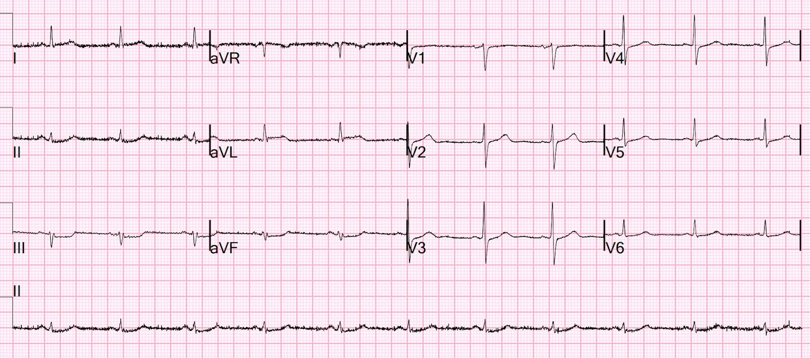
Máy tính đọc là: “NHỊP XOANG. ĐIỆN TÂM ĐỒ BÌNH THƯỜNG”
Thuật toán Veritas
Bạn nghĩ gì?
Hãy RẤT cẩn thận khi máy tính đọc điện tâm đồ là “Bình thường”.
Tôi thấy ST chênh xuống ở thành dưới (soi gương với ST chênh lên (STE) kín đáo ở aVL) và ST chênh xuống kín đáo ở các chuyển đạo trước tim, và nghĩ: “Nếu bệnh nhân này đến vì đau ngực, thì đây là một OMI cấp.”
Vì vậy tôi tra trên máy tính. Hóa ra đó là một bệnh nhân 50 mấy tuổi, không có tiền sử bệnh tim, đã gọi 911 vì đau ngực và được xe cứu thương đưa đến khu phân loại (triage) 75 phút trước đó (vì toàn bộ khoa cấp cứu (ED) đang quá tải). Sau khi ghi điện tâm đồ, anh ấy được đưa ra phòng chờ và đã ở đó hơn một giờ. Mọi điện tâm đồ lúc phân loại đều được đưa ngay cho bác sĩ cấp cứu phụ trách khu phân loại xem.
Tôi đến khu phân loại và đưa điện tâm đồ cho bác sĩ phụ trách khu phân loại của chúng tôi, người đọc OMI trên điện tâm đồ RẤT giỏi, và anh ấy nhận ra ngay các dấu hiệu. Trong lúc vội vàng anh ấy đã không nhìn đủ kỹ, có lẽ vì máy tính đã ghi “ĐIỆN TÂM ĐỒ BÌNH THƯỜNG”, VÀ vì một loạt tác giả thiếu thông tin đã lan truyền ý tưởng rằng chúng ta không cần xem các điện tâm đồ lúc phân loại mà máy tính đọc là “BÌNH THƯỜNG”.
Tôi gửi điện tâm đồ này cho Queen of Hearts (PMcardio OMI), và đây là kết luận:

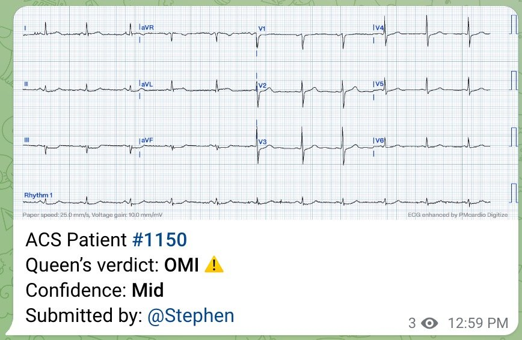
Chúng tôi đưa bệnh nhân vào phòng ổn định. Bệnh nhân cho biết cơn đau giờ đã đỡ nhiều, gợi ý tái tưới máu tự phát và điện tâm đồ sẽ cho thấy các dấu hiệu đã thoái lui.
Vì vậy chúng tôi ghi một điện tâm đồ khác 77 phút sau điện tâm đồ đầu tiên:

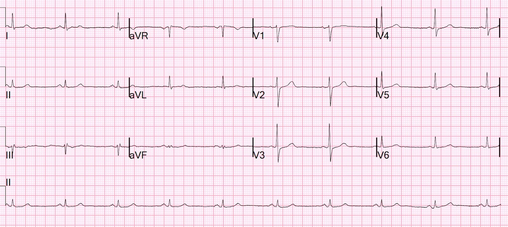
Các dấu hiệu phần lớn đã thoái lui.
Thuật toán Veritas
Bệnh nhân được dùng aspirin và heparin. Phòng thông tim (cath lab) được kích hoạt. Cơn đau tái phát và một điện tâm đồ khác được chỉ định, nhưng mãi đến khi cơn đau lại đang giảm dần (nhưng vẫn còn) mới được ghi:

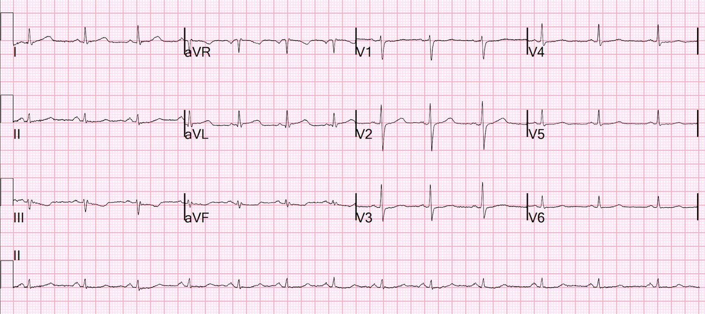
Bằng chứng OMI tái phát
Thuật toán Veritas
Tôi gửi điện tâm đồ này cho Queen of Hearts (PMcardio OMI), và đây là kết luận:

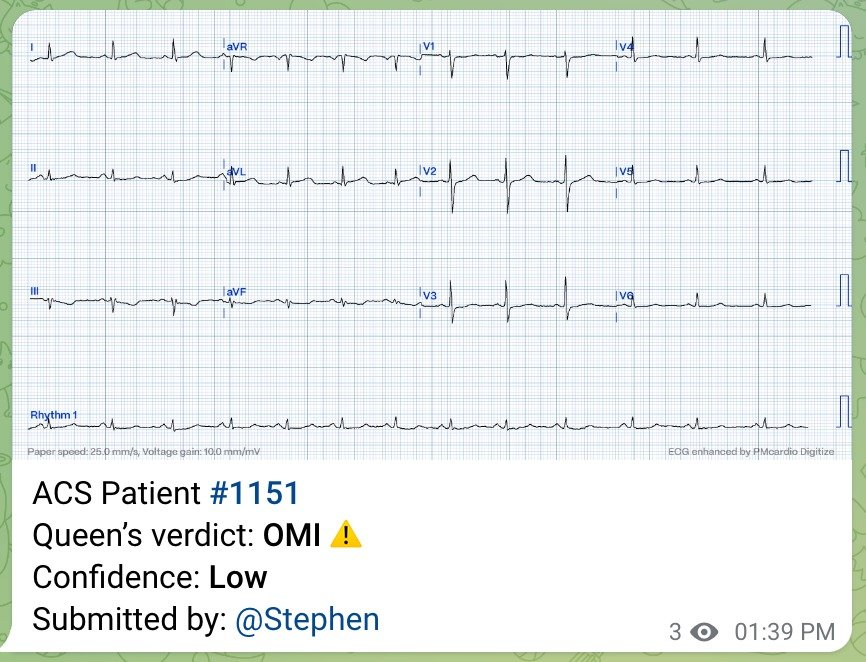
Bệnh nhân được đưa lên phòng thông tim, lúc này đã hết đau, và có tổn thương hẹp 99% ở nhánh trung gian (ramus intermedius) (đây là một động mạch nằm giữa động mạch mũ và LAD, không phải ai cũng có).
Tổn thương này dĩ nhiên đã được đặt stent.
Troponin I đầu tiên trả về là 56 ng/L (giới hạn trên tham chiếu (URL) = 35 ng/L). Trong bối cảnh này, một mức troponin như vậy là chẩn đoán nhồi máu cơ tim típ 1, nhưng không cho bạn biết đó là OMI hay không phải OMI. [Thực ra đây là một ca OMI dao động – tắc rồi tái tưới máu. Những ca này cần kích hoạt phòng thông tim cấp cứu!]
Đây là điện tâm đồ của bệnh nhân vào sáng hôm sau:

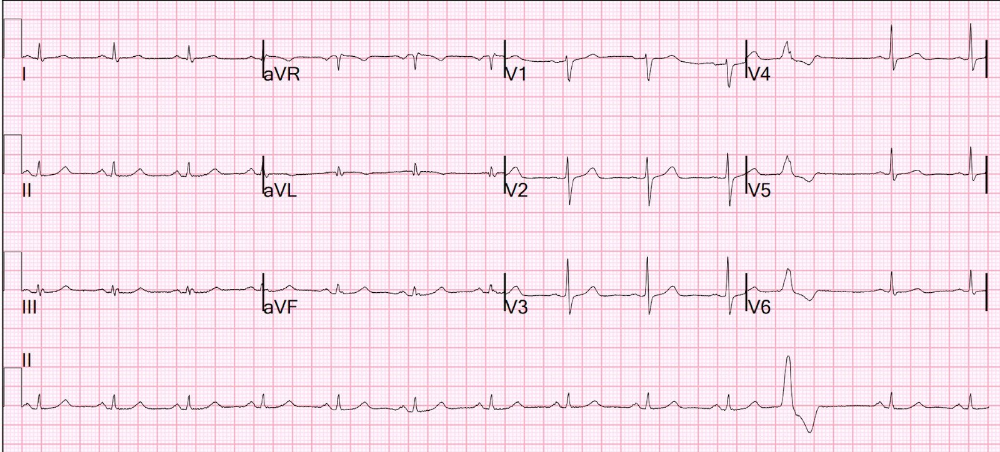
Có sóng T đảo ngược ở aVL, phù hợp với tái tưới máu. Toàn bộ ST chênh xuống ở các chuyển đạo trước tim đã hết. Thuật toán Veritas.
Hôm sau tôi đã tìm được điện tâm đồ trước viện:

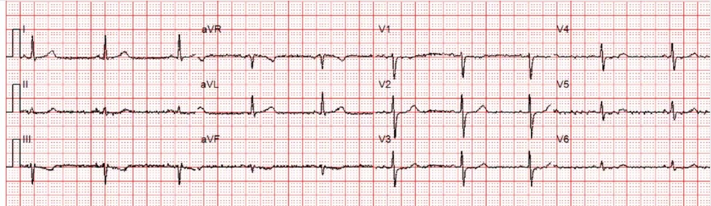
Có ST chênh xuống (STD) kín đáo và rất đáng ngờ ở các chuyển đạo dưới và các chuyển đạo trước tim, nhưng tôi sẽ không gọi đó là chẩn đoán OMI.
Thuật toán Zoll
Tôi gửi điện tâm đồ này cho Queen of Hearts (PMcardio OMI), và đây là kết luận:

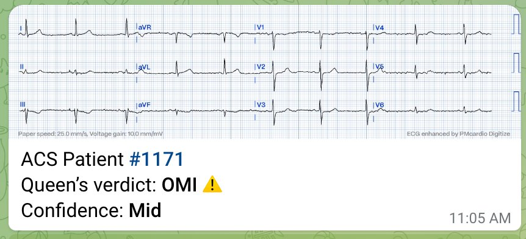
Queen thật Tuyệt vời!! Queen muôn năm!!
BẠN CŨNG CÓ THỂ CÓ BOT AI PM Cardio!! (ỨNG DỤNG AI PM CARDIO OMI)
Nếu bạn muốn bot này giúp bạn chẩn đoán sớm OMI và cứu bệnh nhân cùng cơ tim của họ, bạn có thể đăng ký để nhận phiên bản beta sớm của bot tại đây. Bot chưa được phát hành, nhưng đây là cách để bạn có tên trong danh sách.
https://share-eu1.hsforms.com/18cAH0ZK0RoiVG3RjC5dYdwfyfsg (biểu mẫu đăng ký danh sách chờ)
Thường rất khó phân biệt OMI với hình ảnh bắt chước (mimic) khi có ST chênh lên ở aVL và ST chênh xuống ở III.
Đây là bài viết giúp ích cho việc đó:
Bệnh nhân 40 mấy tuổi đau ngực dữ dội. Nhồi máu cơ tim bên cao: dương tính thật và dương tính giả. ST chênh xuống không có giá trị định khu.
Tôi sẽ đặt các điện tâm đồ của bài đó ở đây để bạn tự kiểm tra:
Ca chỉ điểm (ca số không):

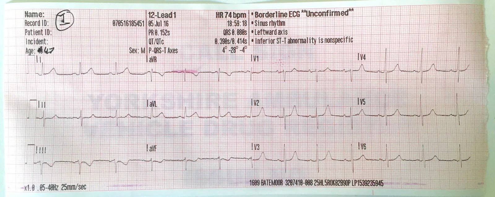
Ca 1

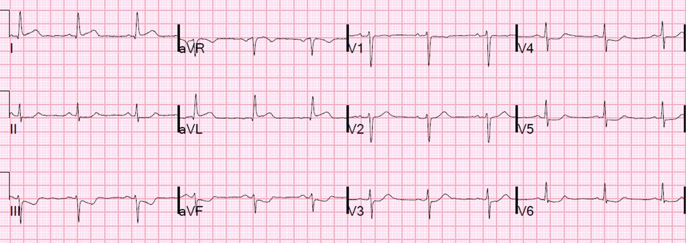
Ca 2

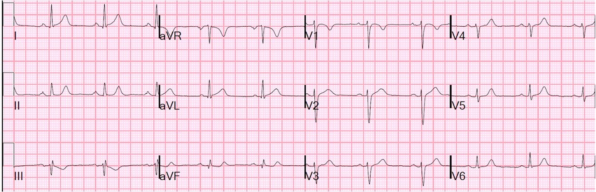
Ca 3

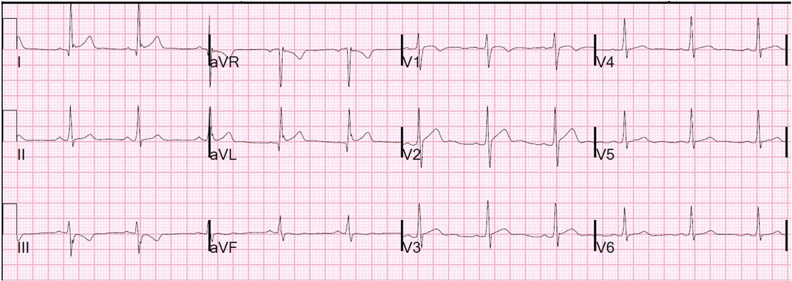

===================================
BÌNH LUẬN CỦA TÔI, bởi KEN GRAUER, MD (12/7/2023):
===================================
Bác sĩ Smith đặt tên cho bài hôm nay là “Hãy RẤT cẩn thận khi máy tính đọc điện tâm đồ là Bình thường”. Sau nhiều thập kỷ nghiên cứu (và so sánh) cách đọc điện tâm đồ của rất nhiều bác sĩ tim mạch, bác sĩ nội khoa và bác sĩ nội khoa bệnh viện (hospitalist) (khi tôi thu thập “dữ liệu” cho các cuốn sách điện tâm đồ tôi đang viết) — tôi sẽ đi xa hơn một bước so với nhận định này mà nói rằng — Nếu BẠN chịu trách nhiệm chăm sóc một bệnh nhân nào đó — thì đừng chấp nhận điều mà bất kỳ ai khác nói về một điện tâm đồ cho đến khi chính BẠN đã xem điện tâm đồ thực tế.
- Lời cảnh báo này đặc biệt đúng với những bản ghi như các bản ghi mà chúng ta thấy trong ca hôm nay.
- T.B. (P.S.): Từ lâu tôi đã phải trả giá để học được tầm quan trọng của việc tự mình xem điện tâm đồ thực tế …
Hãy xem xét 2 bản ghi đầu tiên của ca hôm nay — mà tôi đã đưa lại trong Hình 1:

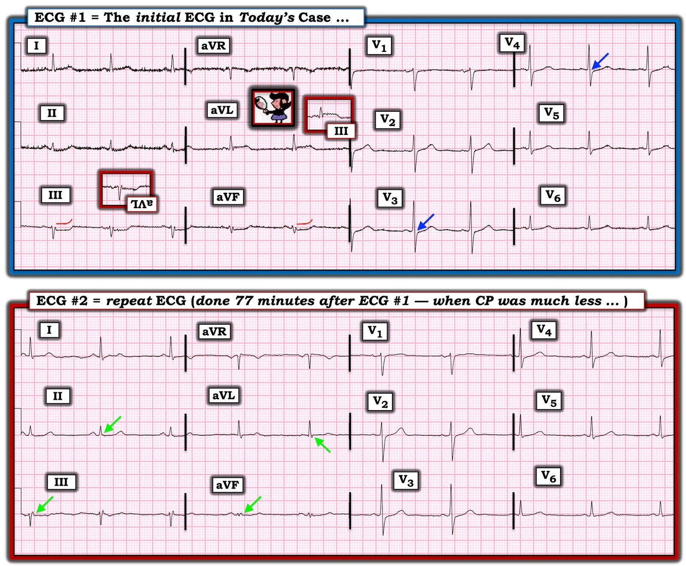
ĐIỂM #1: Các điện tâm đồ trong ca hôm nay không thể diễn giải được nếu không biết bệnh sử.
- NẾU bối cảnh lâm sàng của điện tâm đồ #1 là bản ghi này được ghi tại cơ sở chăm sóc ngoại trú, từ một bệnh nhân vốn ổn định, có bệnh mạch vành lâu năm nhưng không đau ngực mới — thì tôi sẽ diễn giải điện tâm đồ này là có bất thường ST-T “không đặc hiệu”, nhiều khả năng không cấp tính.
- NGƯỢC LẠI, NẾU — bối cảnh lâm sàng khi ghi điện tâm đồ #1 là một bệnh nhân đến khoa cấp cứu vì mới đau ngực (đây chính xác là bối cảnh lâm sàng của bệnh nhân này trong ca hôm nay) — thì chúng ta cần biết đến khái niệm “giả bình thường hóa“ (pseudonormalization) ở bệnh nhân OMI, trong đó động mạch “thủ phạm” đã tự mở thông. (Xem Bình luận của tôi ở cuối trang của bài ngày 18 tháng Năm năm 2023 — và bài ngày 9 tháng Tư năm 2023 — cũng như trong nhiều bài khác của chúng tôi trên Dr. Smith’s ECG Blog).
- Xin nhấn mạnh: Điện tâm đồ #1 không “bình thường”. Dù vậy — các thay đổi ST-T mà chúng ta thấy ở điện tâm đồ #1 là kín đáo, và dễ bị bỏ sót nếu không được chú ý đúng mức.
- Khả năng #3: Nhiều người trong chúng ta được giao trách nhiệm đọc lại (overread) các điện tâm đồ do người khác đã đọc. Đây chính xác là tình huống bác sĩ Smith gặp phải trong ca hôm nay. Vì thế — khi thấy điện tâm đồ #1 ban đầu này, nhưng không biết bệnh sử là gì, cũng không biết diễn tiến lâm sàng của ca bệnh ra sao — bác sĩ Smith đã nhận ra sự cần thiết phải tìm hiểu những thông tin này!
- “Điều cần nhớ“ rút ra từ Điểm #1: Mặc dù các dấu hiệu trên điện tâm đồ #1 là kín đáo — Một khi chúng ta hỏi về bệnh sử (tức là bệnh nhân này đến khoa cấp cứu vì đau ngực mới xuất hiện, và cơn đau dường như đã giảm bớt trong thời gian anh ấy được đưa ra phòng chờ) — Chúng ta cần biết rằng lý do các dấu hiệu OMI cấp có thể kín đáo trong những hoàn cảnh này là vì động mạch “thủ phạm” có thể đã tự mở thông trở lại.
- Chúng ta cũng cần nhớ rằng trước khi có ứng dụng AI QoH (Queen Of Hearts) — kết quả đọc điện tâm đồ bằng máy tính nổi tiếng là không nhận ra các dấu hiệu OMI kín đáo trong giai đoạn giả bình thường hóa. Như bác sĩ Smith nói — Chúng ta không thể tin vào kết quả đọc “bình thường” của máy tính ở một bệnh nhân đau ngực mới xuất hiện.
ĐIỂM #2: Vì sao bác sĩ Smith ngay lập tức nhận ra điện tâm đồ #1 là Bất thường?
Dù kín đáo — Ở một bệnh nhân đến vì đau ngực mới xuất hiện rồi sau đó giảm đi, điện tâm đồ #1 phải được diễn giải là gợi ý OMI cấp cho đến khi chứng minh được điều ngược lại. Và — trách nhiệm chứng minh điều ngược lại thuộc về chúng ta.
- Như bác sĩ Smith nói — Có ST chênh xuống nhẹ-nhưng-thật ở từng chuyển đạo dưới trên điện tâm đồ #1. Hơn thế nữa — có ST dẹt ở các chuyển đạo này (thấy rõ nhất ở chuyển đạo III và aVF của điện tâm đồ #1 — như gợi ý bởi đường viền ĐỎ mà tôi vẽ phía trên các chuyển đạo này).
- Hình ảnh ST-T đối xứng soi gương “kỳ diệu” mà chúng tôi thường xuyên nhấn mạnh trên Dr. Smith’s ECG Blog có hiện diện giữa chuyển đạo III và chuyển đạo aVL (Chẳng phải các sóng ST-T lật ngược = soi gương trong các ô chèn ĐỎ ở điện tâm đồ #1 đã làm nổi bật mối quan hệ soi gương này sao?).
- Trên điện tâm đồ #1 có sự mất đi của đoạn ST chênh lên nhẹ, dốc lên bình thường mà chúng ta thường thấy ở V2 và V3. Tôi đã vẽ các mũi tên XANH DƯƠNG ở chuyển đạo V3 và chuyển đạo V4 của bản ghi này để làm nổi bật ST chênh xuống kín-đáo-nhưng-thật ở các chuyển đạo này — điều mà ở một bệnh nhân đau ngực mới xuất hiện thì chỉ điểm OMI thành sau cho đến khi chứng minh được điều ngược lại.
ĐIỂM #3: Bằng cách nào điện tâm đồ #2 xác nhận nghi ngờ của chúng ta về điện tâm đồ #1?
Như bác sĩ Smith nói — các bất thường ST-T đã nêu ở trên của điện tâm đồ #1 chắc chắn đã giảm trên điện tâm đồ #2, được ghi 77 phút sau đó, vào lúc cơn đau ngực của bệnh nhân đang thoái lui.
- NẾU điện tâm đồ #2 ghi lại này là điện tâm đồ duy nhất có được — thì khó mà nói nó chẩn đoán được điều gì. Nhưng các mũi tên XANH LÁ mà tôi vẽ trên điện tâm đồ #2 cho thấy rõ rằng ST chênh xuống ở thành dưới kín-đáo-nhưng-thật và ST chênh lên ở chuyển đạo aVL vốn có trên điện tâm đồ #1 nay không còn thấy nữa!
- Kết hợp với bệnh sử lâm sàng là đau ngực đã giảm — các mũi tên XANH LÁ này làm nổi bật thay đổi ST-T “động” (dynamic) — bản thân điều đó đã xác nhận sự cần thiết phải thông tim và PCI kịp thời.
- “Điều cần nhớ“ rút ra từ Điểm #3: Mặc dù một số bác sĩ lâm sàng có thể đặt câu hỏi về sự cần thiết phải thông tim kịp thời khi cả đau ngực lẫn các thay đổi điện tâm đồ đi kèm đều đã thoái lui — việc cơn đau ngực của bệnh nhân này tái phát sau khi ghi điện tâm đồ #2 làm nổi bật thực tế lâm sàng rằng PCI vẫn là thiết yếu — bởi vì một động mạch “thủ phạm” đã tự mở thông trở lại — cũng có thể dễ dàng tự tắc lại. PCI kịp thời được chỉ định để ngăn chặn điều này.
- Cuối cùng — Theo kinh nghiệm của tôi, có quá nhiều bác sĩ lâm sàng không đánh giá các điện tâm đồ liên tiếp bằng cách so sánh tỉ mỉ từng chuyển đạo một. Đặt các bản ghi tuần tự cạnh nhau (như tôi đã làm ở Hình 1) — giúp việc so sánh liên tiếp các thay đổi kín đáo dễ dàng hơn nhiều (như được làm nổi bật bởi các mũi tên XANH LÁ ở điện tâm đồ #2). Ngược lại — xem lướt nhanh điện tâm đồ #2 mà không đặt điện tâm đồ #1 ngay bên cạnh dễ dẫn đến bỏ sót dấu hiệu thay đổi ST-T động trên điện tâm đồ #2.